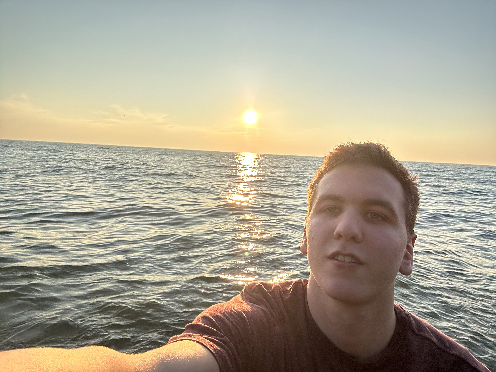

Matthew Owen
Welcome to the Page! I'm a cybersecurity major, this is my first semester here. I quickly ran out of things to write about so now hear all about how I've been a member my whole life! I was born into the covenant but really blossomed into the gospel during my last two years of high school. I then graduated and served a mission in the Orem Utah Mission(which split since I've gotten home). While there are a great many banger scriptures, some of the contenders for my favorite include Romans 8:18, Isaiah 55:8-9, and 2 Nephi 4(like the whole chapter). I'm also single if anyone is looking for a prospect(guys only welcome if free pizza is provided)